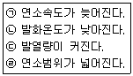
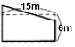
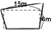
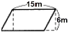
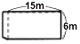
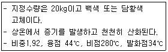
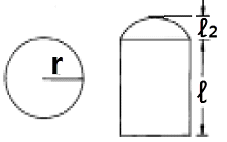

위험물기능사 (2005-07-17 기출문제)
1과목: 화재 예방과 소화방법
1. 대형 수동식 소화기 중 봉상수(棒狀水)소화기에 적응성이 없는 것은?
- 인화성고체 위험물
- 제4류 위험물
- 제5류 위험물
- 제6류 위험물
(정답률: 65%)

2. 축압식소화기의 압력계의 지침이 녹색을 가르키고 있다. 이 소화기의 상태는?
- 과충전된 상태
- 압력이 미달된 상태
- 정상상태
- 이상고온 상태
(정답률: 89%)
3. 위험물안전관리법상 스프링클러헤드는 부착장소의 평상시 최고주위온도가 28℃미만인 경우 표시온도(℃)를 얼마의 것을 설치하여야 하는가?
- 57미만
- 57이상 79미만
- 79이상 121미만
- 121이상 162미만
(정답률: 44%)
4. 제조소 또는 취급소용 건축물로서 외벽이 내화구조로 된 것의 1소요 단위는?
- 50㎡
- 75㎡
- 100㎡
- 150㎡
(정답률: 60%)
5. 가연성 물질을 공기 중에서 연소시키고 공기 중 산소의 농도를 증가시켰을 때 나타나는 현상은?
- 발화온도가 높아진다.
- 연소범위가 좁아진다.
- 화염온도가 낮아진다.
- 점화에너지가 감소한다.
(정답률: 38%)
6. 위험물제조소에는 지정위험물에 따라 화기엄금, 화기주의 게시판을 설치하여야 한다. 게시판의 바탕-문자가 바르게 짝지어진 것은?
- 백색바탕-청색문자
- 황색바탕-적색문자
- 적색바탕-백색문자
- 백색바탕-적색문자
(정답률: 68%)
7. 과산화나트륨의 화재시 가장 적당한 소화제는?
- 포소화제
- 마른모래
- 소화분말
- 젖은피복물
(정답률: 82%)
8. 소화기의 사용방법에 대한 설명으로 가장 옳은 것은?
- 소화기는 화재 초기에만 효과가 있다.
- 소화기는 대형 소화설비의 대용으로 사용할 수 있다.
- 소화기는 어떠한 소화에도 만능으로 사용할 수 있다.
- 소화기는 구조와 성능, 취급법을 명시하지 않아도 된다.
(정답률: 69%)
9. 옥내소화전설비를 설치할 때 급수 배관에 대한 설명으로 옳지 않은 것은?
- 배관은 배관용 탄소 강관(KS D 3507)을 사용한다.
- 주 배관의 입상관 구경은 최소 60mm 이상으로 한다.
- 흡수관은 펌프마다 전용으로 설치한다.
- 원칙적으로 급수배관은 생활용수배관과 같이 사용 할 수 없으며 전용배관으로만 사용한다.
(정답률: 56%)
10. 일반적인 석유난로의 연소형태로, 점도가 높고 비휘발성인 액체를 안개 상으로 분사하여 액체의 표면적을 넓혀 연소 시키는 방법은?
- 액적연소
- 증발연소
- 분해연소
- 표면연소
(정답률: 41%)
11. 스프링클러헤드의 설치방법에 대한 설명으로 옳지 않은 것 은?
- 개방형헤드는 원칙적으로 반사판으로부터 하방으로 0. 45m, 수평방향으로 0. 3m 공간을 보유할 것
- 폐쇄형헤드는 가연성물질 수납부분에 설치시 반사판으로부터 하방으로 0. 9m, 수평방향으로 0. 4m의 공간을 확보할 것
- 폐쇄형헤드 중 개구부에 설치하는 것은 당해 개구부의 상단으로부터 높이 0. 15m 이내의 벽면에 설치할 것
- 폐쇄형헤드설치 시 급배기용 덕트의 긴변의 길이가 1.2m를 초과하는 것이 있는 경우에는 당해 덕트의 윗 부분에도 헤드를 설치할 것
(정답률: 52%)
12. 중탄산나트륨과 황산알루미늄을 소화약제로 사용하여 만들어진 소화기를 사용할 때 나타나는 소화방법은?
- 제거소화와 질식소화
- 냉각소화와 억제소화
- 질식소화와 억제소화
- 냉각소화와 질식소화
(정답률: 34%)
13. 화학포의 소화약제인 탄산수소나트륨 6몰과 반응하여 생성 되는 이산화탄소는 표준상태에서 몇 L 인가?
- 22.4
- 44.8
- 89.6
- 134.4
(정답률: 43%)
14. 알칼리 금속은 화재예방상 다음 중 어떤 기(원자단)를 가지고 있는 물질과 접촉을 금해야 하는가?
- -OH
- -O-
- -COO-
- -NO2
(정답률: 50%)
15. 가연물 연소에 필요한 산소의 공급원을 단절하는 것은 소화이론 중 어떤 작용을 이용한 것인가?
- 가연물제거작용
- 질식작용
- 희석작용
- 냉각작용
(정답률: 82%)
16. 탄화수소에서 탄소의 수가 증가할수록 나타나는 현상들로 옳게 짝 지워 놓은 것은?

- ㄱ
- ㄱ, ㄴ
- ㄱ, ㄴ, ㄷ
- ㄱ, ㄴ, ㄷ, ㄹ
(정답률: 40%)
17. 제1류에서 제6류 위험물의 소화에 모두 사용될 수 있는 소화제는?
- 젖은모래
- 마른모래
- 중조톱밥
- 수증기
(정답률: 86%)
18. 다음 중 소화약제가 아닌 것은?
- CF2ClBr
- CHF2Br4
- CF3Br
- C2F4Br2
(정답률: 64%)
19. 옥내소화전설비의 비상 전원은 몇 분 이상 작동할 수 있어야 하는가?
- 45분
- 30분
- 20분
- 10분
(정답률: 63%)
20. 제3류 위험물인 인화칼슘(Ca3P2)의 소화방법으로 적당하지 않은 것은?
- 물
- CO2
- 건조석회
- 금속화재용 분말소화약제
(정답률: 71%)
2과목: 위험물의 화학적 성질 및 취급
21. 다음 중 벤젠의 일반적 성질로서 틀린 것은?
- 증기는 유독하다.
- 수지 및 고무등을 잘 녹인다.
- 휘발성 있는 무취의 노란색 액체이다.
- 인화점은 -11℃ 이고, 분자량은 78. 1이다.
(정답률: 63%)
22. 제1석유류 중에서 인화점이 -18℃, 분자량이 58.08 이고 햇빛에 분해되며 착화온도가 538℃인 위험물은 다음 중 어느 것인가?
- 가솔린
- 아세톤
- 에틸알코올
- 벤젠
(정답률: 48%)
23. 주유 취급소의 보유공지는 너비 15m 이상, 길이 6m 이상의 콘크리트로 포장되어야 한다. 다음 중 가장 적합한 보유공지라고 할 수 있는 것은?




(정답률: 62%)
24. 에테르의 성질 중 맞는 것은?
- 착화 온도는 300℃ 이다.
- 증기는 공기보다 가볍고 물에 잘 녹는다.
- 피부에 닿으면 피부가 상한다.
- 연소 범위는 1.9 - 48% 이다.
(정답률: 33%)
25. C6H2(NO2)3OH와 C2H5NO3의 공통성질 중 옳은 것은?
- 니트로 화합물에 속한다.
- 인화성이고 또 폭발성이 있는 액체이다.
- 무색 또는 담황색 액체로서 방향이 있다.
- 모두 알코올에 녹는다.
(정답률: 26%)
26. 다음 중 규조토에 흡수시켜 다이나마이트를 제조할 때 사용되는 위험물은?
- 장뇌
- 질산에틸
- 니트로글리세린
- 니트로셀룰로오스
(정답률: 62%)
27. 다음 중 제1석유류에 대한 설명으로 옳은 것은?
- 1기압에서 인화점이 21℃ 미만인 것
- 1기압에서 액상으로 착화점 21℃ 미만인 것
- 1기압 40℃ 에서 액상으로 인화점 70℃ 미만인 것
- 1기압 40℃ 에서 액상의 것으로 인화점 200℃ 미만인것
(정답률: 59%)
28. 메틸에틸케톤의 저장 또는 취급에 적당하지 않은 것은?
- 직사 광선을 피할 것
- 찬곳에 저장 할 것
- 저장 용기에 가스 배출 구멍을 설치할 것
- 통풍을 잘 시킬 것
(정답률: 70%)
29. 금속수소화화합물이 물과 반응 할 때 생성되는 것은?
- 수소
- 산소
- 일산화탄소
- 에틸아세테이트
(정답률: 67%)
30. 제1류 위험물과 제6류 위험물의 공통성상은?
- 금수성
- 가연성
- 산화성
- 자기반응성
(정답률: 72%)
31. 동식물유류의 성질 중에서 틀린 것은?
- 상온에서 고체인것은 없다.
- 들기름은 건성유이고 올리브유는 불건성유이다.
- 인화점은 대체로 250∼300℃ 정도가 많다.
- 불건성유일수록 자연발화의 위험이 크다.
(정답률: 51%)
32. 질산 메틸의 분자량은 얼마인가?(단, C, O, N, H의 원자량은 각각 12, 16, 14, 1 이다. )
- 53
- 65
- 77
- 89
(정답률: 52%)
33. 금속나트륨이 물과 반응하면 위험한 이유 중 알맞는 것은?
- 물과 반응해서 질산나트륨이 되기 때문에
- 물과 반응해서 산소를 발생하기 때문에
- 물과 반응해서 높은 열과 수소를 발생하기 때문에
- 물과 반응해서 수산화칼륨을 만들기 때문에
(정답률: 68%)
34. 진한 질산의 위험성과 저장에 대한 설명중 적당하지 않는 것은?
- 부식성이 크고 산화성이 강하다.
- 황화 수소와 접촉하면 폭발을 한다.
- 일광에 쪼이면 분해되어 산소를 발생한다.
- 저장 보호액으로는 물이 안전하다.
(정답률: 63%)
35. 과산화마그네슘 성상 및 취급에 관한 설명으로 틀린 것은?
- 가연성유기물과 혼합되어 있을 때 가열, 충격에 의해 폭발 위험이 있다.
- 습기 또는 물과 접촉시 산소를 방출한다.
- 산과 접촉하여 과산화수소를 발생한다.
- 적녹색의 결정이다.
(정답률: 43%)
36. 다음 화합물중 망간의 산화수가 +6인 것은?
- KMnO4
- MnO2
- MnSO4
- K2MnO4
(정답률: 42%)
37. 다음 중 제5류 위험물이 아닌 것은?
- 질산에틸
- 니트로글리세린
- 초산메틸
- 피크르산
(정답률: 40%)
38. 염소산칼륨의 성질에 대한 설명 중 옳은 것은?
- 가열, 마찰에 의해서 가연성 가스가 발생한다.
- 그 자신은 불연성 물질이다.
- 수용액은 약한 산성이다.
- 물, 알코올에 잘 녹는다.
(정답률: 40%)
39. 다음 물질 중 연소시 푸른 불꽃을 내며 타서 아황산가스를 발생하는 것은?
- 적린
- 황
- 황화린
- 황린
(정답률: 38%)
40. 다음의 조건을 갖추고 있는 위험물은?

- 적린
- 황린
- 유황
- 마그네슘
(정답률: 63%)
41. 탄화칼슘이 물과 반응하여 발생되는 가스는 무엇인가?
- 아세틸렌
- 메탄
- 수소
- 이산화탄소
(정답률: 61%)
42. 금속나트륨의 저장 보호액으로 사용할 수 있는 것은?
- 아세톤
- 메탄올
- 식초
- 유동파라핀
(정답률: 60%)
43. 제3류 위험물 중 취급상 가장 주의해야될 사항은?
- 석유류와 접촉을 피해야 한다.
- 수분과 접촉을 피해야 한다.
- 마른모래와 접촉을 피해야 한다.
- 충격을 방지해야 한다.
(정답률: 72%)
44. 탄화칼슘의 저장 및 취급과 관계 없는 것은?
- 물, 습기와의 접촉을 피한다.
- 석유 속에 저장해 둔다.
- 장기 저장할 때는 질소가스를 충전한다.
- 화기로부터 먼곳에 저장한다.
(정답률: 44%)
45. 다음 각 물질에 대한 설명 중 틀린 것은?
- 유황은 물이나 산에 녹지 않는다.
- 오황화린은 CS2에 녹는다.
- 삼황화린은 가연성 물질이다.
- 칠황화린은 더운물에 분해하여 이산화황을 발생한다.
(정답률: 39%)
46. 18㏖ 농도의 황산에서 9N의 황산 60mL를 만드는데 약 몇 mL의 물이 필요한가?
- 30
- 45
- 60
- 75
(정답률: 35%)
47. 염소산나트륨에 대한 설명 중 틀린 것은?
- 무취, 무색의 입방정계 주상결정이다.
- 산과 반응하여 유독하고, 폭발성의 ClO2가 발생
- 저장은 철제용기를 피한다.
- 풍해성이 있기 때문에 포장을 잘해야 한다.
(정답률: 43%)
48. 진한질산이 손이나 몸에 묻었을 때 응급처치 방법 중 가장 먼저 해야 할 일은?
- 묽은 황산으로 씻는다.
- 암모니아수로 중화시킨다.
- 다량의 물로 충분히 씻는다.
- 수산화나트륨용액으로 중화시킨다.
(정답률: 61%)
49. 다음 중 과염소산의 성상 중 올바른 것은?
- 흡습성이 강한 고체이다.
- 매우 불안전한 강산류이다.
- 물과 반응하여 조연성 가스를 발생한다.
- 공기중 증기는 점화원에 의해 폭발한다.
(정답률: 27%)
50. 건조하면 타격, 마찰에 의하여 폭발하므로 저장, 운반할 때 물(20%) 또는 알코올(30%)를 첨가 습윤 시키는 위험물은?
- 셀룰로이드
- 트리니트로 톨루엔
- 니트로 셀룰로오즈
- 디니트로 나프탈렌
(정답률: 39%)
51. 다음은 위험물의 성질을 설명한 것이다. 옳은 것은?
- 황화린의 착화온도는 35℃ 이다.
- 황화린이 연소하면 O3가스가 발생한다.
- 마그네슘은 알칼리수용액과 반응하여 H2 가스를 발생 시킨다.
- 황은 전기의 절연재료로 사용되며, 3종의 동소체가 존재한다.
(정답률: 38%)
52. 질산에틸에 대하여 틀린 것은?
- 에탄올을 진한 질산에 작용시켜서 얻는다.
- 방향을 가진 무색의 액체이다.
- 비중 : 1.11, 끓는점 : 88℃을 가진다.
- 인화점이 높아서 인화의 위험이 적다.
(정답률: 55%)
53. 과망간산칼륨 2몰이 240℃에서 분해했을 때 생성되는 물질이 아닌 것은?
- O2
- MnO2
- K2O
- K2MnO4
(정답률: 35%)
54. 동.식물유류의 일반적 성질에 관한 내용이다. 거리가 먼 것은?
- 아마인유는 건성유이므로 자연발화의 위험이 존재한다.
- 요오드값이 클수록 포화지방산이 많으므로 자연발화의 위험이 적다.
- 화재시 액온이 상승하여 대형화재로 발전하기 때문에 소화가 곤란하다.
- 동식물유는 대체로 인화점이 220∼300℃ 정도이므로 연소위험성 측면에서 제4석유류와 유사하다.
(정답률: 56%)
55. 다음 설명 중 제2석유류에 해당하는 것은?(단, 1기압 상태임)
- 착화점이 21℃ 미만인 것
- 착화점이 30℃ 이상 50℃ 미만인 것
- 인화점이 21℃ 이상 70℃ 미만인 것
- 인화점이 21℃ 이상 90℃ 미만인 것
(정답률: 72%)
56. 다음 중 제2석유류의 품목끼리 짝 지워진 것은?
- 등유, 경유
- 등유, 중유
- 기계류, 글리세린
- 글리세린, 장뇌유
(정답률: 72%)
57. 그림과 같이 설치한 원형 탱크의 내용적을 구하는 공식이올바른 것은?

- πr2ℓ
- πr2(ℓ＋ℓ2/3)
- (πr2ℓ)/3
- (πr2(ℓ＋ℓ2))/3
(정답률: 37%)
58. 금속리튬의 화학적 성질로 옳지 않은 것은?
- 상온에서 리튬은 산소와 반응하여 진홍색의 산화리튬을 생성한다.
- 물과 반응하여 수산화리튬과 수소를 생성한다.
- 질소와 직접 결합하여 생성물로 질화리튬을 만든다.
- 금속칼륨, 금속나트륨 보다 화학 반응성이 크지않다.
(정답률: 22%)
59. 제3류 위험물의 공통적인 성질을 설명한 것 중 옳은 것은?(단, 황린은 제외)
- 모두 무기화합물이다.
- 저장액으로 석유류를 이용한다.
- 햇빛에 노출되는 순간 발화한다.
- 물과 반응시 발열 또는 발화한다.
(정답률: 54%)
60. 다음 중 제1류 위험물로서 물과 반응하여 격렬하게 발열하는 것은?
- 염소산나트륨
- 카바이트
- 질산암모늄
- 과산화나트륨
(정답률: 51%)